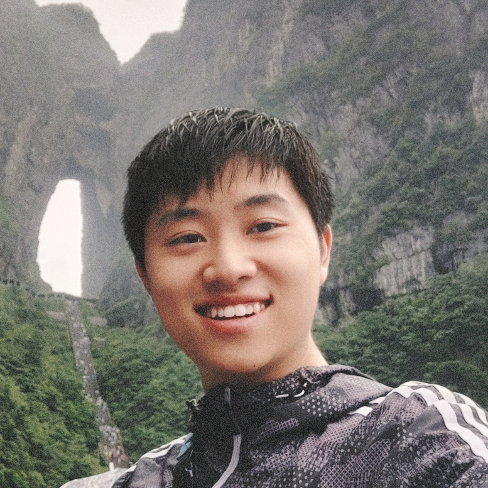

Weijie Ma 马炜杰Fudan University Email: wjma24 [at] m [dot] fudan [dot] edu [dot] cn
|
 |
Biography
I'm a second-year Ph.D. student jointly at
College of Computer Science and Artificial Intelligence@Fudan University
and Shanghai Innovation Institute,
advised by Prof. Wanli Ouyang
and Prof. Han-Sen Zhong.
My research interests include computer vision & graphics, virtual/augmented reality, and AI for science (optics/physics/medicine).
News
- [08/2025] One paper was accepted by Nature.
- [05/2025] One paper was accepted by PRL as Featured in Physics and Editor's Suggestion.
Publications
-
Glasses-Free 3D Display with Ultrawide Viewing Range using Deep LearningWeijie Ma, Zhangrui Zhao, Canyu Zhao, Wanli Ouyang, Han-Sen ZhongNature 2025[Paper] [Code] [BibTeX]
-
AI-Enabled Parallel Assembly of Thousands of Defect-Free Neutral Atom ArraysRui Lin, Han-Sen Zhong, You Li, Zhangrui Zhao, Le-Tian Zheng, Tai-Ran Hu, Hong-Ming Wu, Zhan Wu, Weijie Ma, Yan Gao, Yi-Kang Zhu, Zhao-Feng Su, Wanli Ouyang, Yu-Chen Zhang, Jun Rui, Ming-Cheng Chen, Chao-Yang Lu, Jian-Wei PanPhysical Review Letters (PRL) 2025Featured in PhysicsEditors' Suggestion
Education
Ph.D. Student, College of Computer Science and Artificial Intelligence, Fudan University, 2024 - Present
M.Phil., School of Science and Engineering, The Chinese University of Hong Kong (Shenzhen), 2021 - 2023
Bachelor, School of Information Engineering, Zhengzhou University, 2017 - 2021
Experiences
Intern in Shanghai Artificial Intelligence Laboratory, 2023 - 2025
Visiting Student in CAD&CG Laboratory, Zhejiang University, 2022 - 2023
Hobbies
Music (esp. Taylor Swift); Literary reading and composition; Cycling; Anime; Cooking
|
© Weijie Ma | Last updated: Sept 2025 |